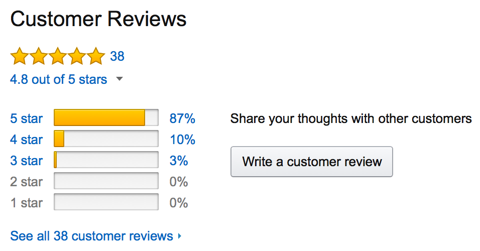

THE POWER OF CUSTOMER REVIEWS
Have you ever hesitated about a purchase?
KEY FINDINGS -
- Online reviews can help you form your decision. No matter if you are looking for the best coffee-maker or the best web hosting provider
- Companies spend billions on marketing and advertising every year. But, at the end of the day, the opinion of other customers is worth more.
- Almost all consumers, who use online reviews, read them early in the buying process.
- Reviews are the most crucial part of the purchase decision for 90% of US customers.
- 72% of customers won’t take action until they read reviews.
- 15% of users don’t trust businesses without reviews.
- 83% of customers don’t trust advertising
- 60% of all shoppers post reviews on Amazon.
- 60% of all shoppers post reviews on Amazon.
- 91% of consumers say that positive reviews make them more likely to use a business
- 76% trust online reviews as much as recommendations from family and friends
- Best-selling products’ have a 4.2-4.7 rating
